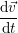
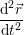
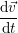
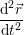
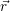
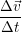
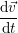
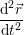

inst
inst =  = 
=  = Antes de partir para algum assunto vou dar uma breves explicações do que creio serem os conceitos bases
necessário. (Não serão definições pois é difícil definir estes conceitos)
Contudo tendo posições e tempos, queremos relacioná-los de alguma forma e por isso existem as derivadas da posição em ordem ao tempo, a velocidade e depois a aceleração. Vamos ver a ideia para chegar a estas grandezas.
Primeiro definimos velocidade média como a variação da posição dividido pela variação de tempo:
|
| (1) |
Esta é a velocidade constante que um objecto deve ter percorrer Δ no intervalo Δt.
Mas o problema com esta definição não carecteriza um sistema num instante, apenas num intervalo. Temos portanto que tornar o Δt zero, mas não podemos dividir igualá-lo a zero, logo tomamos o limite da velocidade média quando o Δt tende para 0 e obtemos a velocidade instantânea. Portanto:
|
| (2) |
Mas esta expressão é a derivada da posição em ordem ao tempo, logo:
|
| (3) |
Obtemos agora uma maneira de ter o valor da velocidade num instante. O mesmo raciocínio é feito para aceleração mas em vez da posição temos a velocidade e o que ficamos é o seguinte:
| med | =  | (4) |
| inst | = = limΔt→0 =  =  | (5) |
O que temos então é uma relação diferencial entre a posição, velocidade e aceleração, ou seja, sabendo uma podemos obter as restantes por derivação ou integração.
Nota muito importante: Estamos a derivar um vector (a posição) em ordem ao tempo, logo obtemos de novo uma quantidade vectorial. Temos portanto que a velocidade e a aceleração são grandezas vectoriais, têm uma direção e sentido.
Outro conceito base que é necessário introduzir é o de partícula material. Já falei do nome corpo, mas ainda não sabemos o que é que medidos ou estudamos, porque ainda não definimos corpo nem nada do género, portanto vou já introduzir o conceito de partícula material, um conceito muito simples mas muito importante que nos vai permitir começar a construir o edifício que é a Mecânica.
A partícula material é um corpo de dimensões desprezáveis e com determinada massa.
Consequências desta definição: Tem uma possição, e também as suas derivadas, pois tem de existir algures, e durante algum tempo (senão também não nos interessa estudá-lo) E mais importante, não terá orientação, pois se não tem dimennsões como define-se um orientação?
É portanto um ponto com massa que se move. Este será o nosso ponto de partida para entender a mecânica.